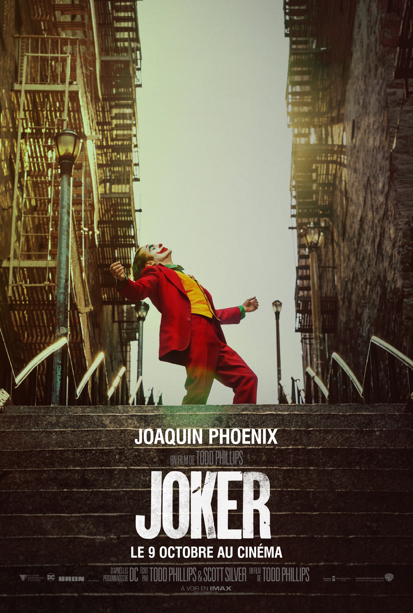
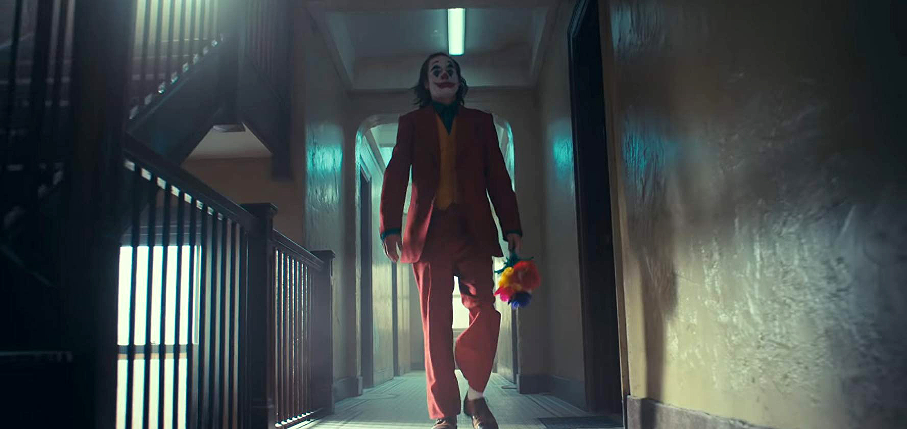

| 海报 | 演员 | 剧情 | 影评 | 资源 | 相关 | 其他 |
|  |
 |
杰昆出道的第一部片子叫《spacecamp》，后来又在《Russkies》 (1987)和《Parenthood 》(1989)中演出，他表演相当不错。
不像一般的美国家庭，杰昆的家庭教育严格，但父母却十分鼓励孩子们从事表演.
很自然的,杰昆就像父母希望的那样做了，他紧紧跟随他的哥哥瑞凡・菲尼克斯和瑞恩・菲尼克斯步入了演艺圈。
At that time, he was called leaf, and he didn't change his name to Joaquin until the early 1990s.
In 2005's new film "never move forward", marking the film with a phoenix style performance brand.
He was nominated for best actor at the 78th Academy Awards and best actor in comedy
电影《小丑》以同名DC漫画角色为基础，由华纳兄弟影业公司发行，计划于2019年10月4日上映。 本片的故事将独立于DCEU之外，故事背景设置在20世纪80年代，讲述了一位生活陷入困境的脱口秀喜剧演员渐渐走向精神的崩溃，在哥谭市开始了疯狂的犯罪生涯，最终成为了蝙蝠侠的宿敌“小丑”的故事。 |
 |
�@不是一部好的「小丑」��影，因�樗�背�x了小丑�@��角色混�y且�o法�A知的本�|，�o了小丑一��悲�⌒缘�可追根溯源的原因。但�@�K不妨�K本片成�橐徊亢秒�影，�@是一部���x了超��英雄般超�F��主�x的犯罪��影，�o�r�o刻不在�τ^���M行mind fuck，直到最後集�w高潮。杰昆・菲尼克斯��特的表演�x予了�@��小丑充�M矛盾与痛苦的悲�⌒缘乃��g人格，我已��可以�A��他�M�哳C��季的�雒媪恕Ｕ�如犯罪��典《出租��司�C》一�樱�《小丑》是�@���r代不二的�x�瘛� 冷�{中的�r�W暖色，展�_��形的蝴蝶骨，打磨好笑容，�o�r�o刻不��你舒服――joker登�觥？赐瓴爬斫��槭颤N要找Tod Phillips：�P於笑的多�N�哟蔚目植老���vs.悲� ��槭颤N他不能留在那��因高�T社��而生成的反抗精神和符��？而�槭颤N抗���\�臃缸锘�、�o政府主�x被�t��化？又�槭颤NJoker的��人悲�∈且���被�Z走�����嗟牟槐宦���的��音，��影�s��行��造�@�优c（後�恚└吖δ懿环�合的����故事溯因？但���@著笑的涌�樱�解放了�S多因果��的���涡���。笑本身即可��抗且一切，而他����抗著笑，到跟笑的同步，就是�榱���抗那更荒�Q的『一切』。平衡了Joker可能因肉身化�t��化而光�h失色的情�r。而起源故事之後，新的情感�Q生：Bruce小少��，他替你留了一��黑暗的soft part。 |
Life is a tragedy when seen in close-up, but a comedy in long-shot. -- Charlie Chaplin 人生近看是场悲剧，但从长远来看却是场喜剧。――查理卓别林
究竟谁是反派？是漫画里先入为主道德沦丧的小丑？是被煽动杀光富人颠覆权力的无政府主义？是居高临下何不食肉糜的精英权贵？还是以阶级分化为轮轴带动社会高速运转的系统本身？表面上是意识形态的尖锐对抗，是小丑不堪的灵魂被一片片撕碎，是将病症视为解药的以毒攻毒；内核却是政治立场的颠倒混淆，是小丑破碎的人格被一点点重塑，是漫长的以疗愈为名的禁锢终获正名。你认为谁是反派决定了你身在何处，而千千万万我们所处的位置决定了这个严丝合缝又千疮百孔的世界将迈向何方。《小丑》发出的质问振聋发聩，但对于所有问题，它无力解答。 |
 |
||||
| ?19信工章明辉 |